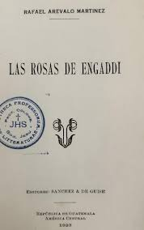

Las rosas de Enggadi
Las Rosas de Engaddi define la personalidad individualista de Rafael
Arévalo Martínez en el mundo poético. Sus dos poemarios anteriores
Maya y Los Atormentados son influencias del modernismo.
Ya en esta obra el autor emprende una nueva trayectoria.
Algunos críticos le consideran el principio en su segunda etapa literaria.
Este poemario consiste de cincuenta poesías las cuales
son separadas en cuatro secciones llamadas libros. En el Primer
Libro es el cariño y amor a la familia el que predomina en la
inspiración. Los hijos y la esposa, o compañera,
son el tema principal. El Segundo Libro consiste en un
testimonio de fe del autor. Es la doctrina católica la que notamos,
ya elevada a un alto plano espiritual. Son varias las oraciones y le
dedica una poesía a Jesús y otra a San Francisco de Asís. La tolerancia al padecimiento
y el consuelo de la muerte prevalecen en el Tercer Libro.
En el Cuarto Libro la creación se sostiene en una variedad
más extensa de estímulos con cierto acento en el poeta observándose a si mismo.
En muchas de las poesías de los cuatro libros
se nota el misticismo que Arévalo Martínez continuará
desarrollando en el resto de sus obras.
Después de la dedicatoria, encontramos el prólogo
desde la página cinco a la diez, firmado por Djed Bórquez.
En la próxima página comienza el primer libro,
continuando las poesías hasta el índice al final.
Si deseas leer el libro "Las Rosas de Enggadi"
puedes hacerlo aquí
¡Espero que te guste!